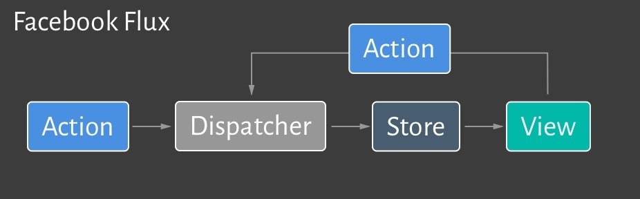

Jass-Challenge
Patrick Walther & Nick Payne
About us
- FHNW graduates
- Zühlke employees
- Web developers
- Passionate Jasser
Things to remember
- Cards played
- Card colors played per player
- Trumpf still in play
- Which cards are Bock
What do we need?
A Server
- Not Java
- Lightweight
- Easy to run/setup
- Good to test
Connectivity
- JavaScript, Java, C#, Haskell ...
- Well defined API
GUI
- Play against Players or Bots
- Watch games of Bots slowed down
- German/French cards
Huge package ecosystem
Lightweight
npm start

Prototypal Inheritance
No static types
Nonverbose Syntax
Connectivity
WebSockets
- Package in almost every programming language
- Easy Setup
- Low Level
Bot, what is your name?
{
"type" : "REQUEST_PLAYER_NAME"
}
Here are your cards. Good luck.
{
"type" : "DEAL_CARDS",
"data" : [{
"number" : 13,
"color" : "SPADES"
}, {
"number" : 9,
"color" : "DIAMONDS"
},
...
]
}
ReactJS
- Invented by Facebook
- One-way data flow
- Virtual DOM
Flux
About bots
what makes a bot smart?
Bot skeletons
There are bot skeletons ready to use in Java 8 and JavaScript.
They are not very smart, but they can play.
A stupid bot
function onRequestCard() {
let cardToPlay = this.getRandomCard();
this.api.playCard(cardToPlay);
}
How can we make him a bit smarter?
- Choose a valid card.
- Keep track of the cards in the hand.
function onRequestCard() {
let handCard = this.giveValidCardFromHand();
this.handcards.splice(this.handcards.indexOf(handCard), 1);
this.client.send(handCard));
}
More stuff to consider
- Creating rules/strategies for the different game modes Trumpf, Obeabe, Undeufe, or if you want to Schiebe
- Your partner's needs.
- Give your bot the ability to learn and improve.
Jass - Challenge Hackathon
Beer & Pizza
2 GoPro HERO 4
04.05.2016
Interested?
http://goo.gl/forms/fTJ55gVeHH